실험은 이렇게 짰어요
출발점은 일부러 엉망으로 만든 동네 카페 사이트 'Bean There Coffee'예요. 노란 배경에 빨간 밑줄 제목, 이미지가 안 뜨는 빈 상자, 표 하나로 된 메뉴가 전부예요. 발표자는 이 사이트를 Claude Code에 주고 Sonnet 5.5와 Opus 5.5에게 각각 같은 일을 시켰어요. 두 모델 모두 effort는 medium이에요.
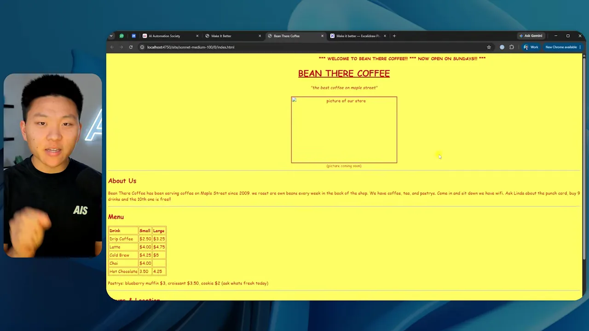
모델에게 100번 연달아 보낸 프롬프트는 화면에 그대로 띄워져 있어요. 사이트를 먼저 보고, 사용자 경험을 생각하고, 전환율이나 겉모습을 높이는 과감한 변경 하나를 만들라는 내용이에요. 눈여겨볼 건 마지막 문장 'You must ship a change every time'이에요.
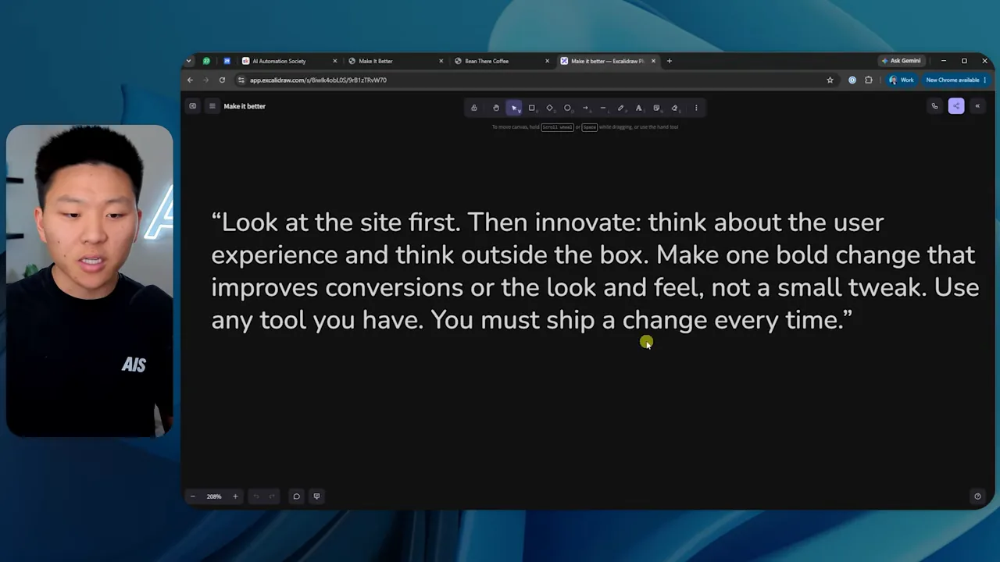
Make one bold change that improves conversions or the look and feel, not a small tweak. Use any tool you have. You must ship a change every time.
전환율이나 겉모습을 높이는 과감한 변경 하나를 만들어. 작은 수정 말고. 쓸 수 있는 도구는 다 써. 매번 반드시 변경을 내보내.
— 영상 00:35
이렇게까지 못 박은 이유가 있어요. 예전에 같은 실험을 했을 때 모델이 20~25라운드쯤에서 "더 할 수 있는 게 없어요" 하고 멈췄대요. 그래서 매번 뭔가를 내보내도록 강제했어요. 이 강제가 뒤에서 보듯 억지 변경의 원인이 되기도 해요.
또 하나 중요한 조건은 '클린룸'이에요. 아래 화면처럼 매 라운드가 새 세션이고, 스킬도 CLAUDE.md도 플러그인도 메모리도 없어요. 모델은 자기 지식과 기본 도구만 가지고 일했어요. 기본 도구에는 웹 검색과 웹 페치도 들어 있었다는 점을 기억해 두세요. 마지막 섹션에서 다시 나와요.
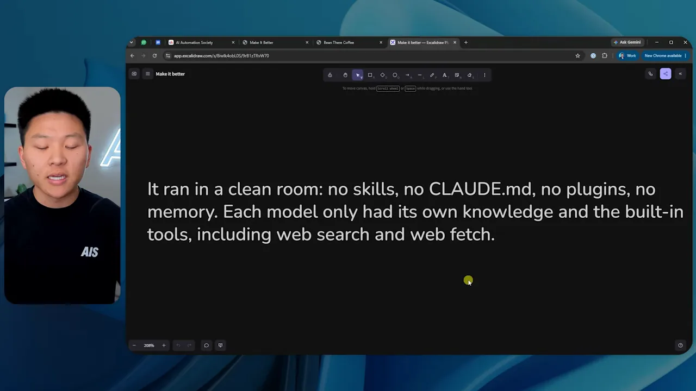
한 라운드에서 일어나는 일을 그림으로 옮기면 이래요. 사이트를 보고, 바꿀 것 하나를 고르고, 반드시 내보내요. 이걸 100번 되풀이해요.
발표자가 이 실험을 한 이유도 짚고 넘어갈게요. 그는 요즘 남의 잘된 사례에서 영감을 가져와 AI 파이프라인을 만들 때 결과가 좋았대요. AI는 틀을 깨는 생각을 잘 못한다고 보거든요. "더 예쁘게 해 줘" 같은 막연한 목표로는 100점 만점에 80점쯤에서 막히고, 90점대로 가려면 사람이 취향을 넣어야 한다는 게 그의 가설이에요.
Sonnet: 조금씩 다듬은 100라운드
발표자는 실험 결과를 보려고 대시보드를 직접 만들었어요. 맨 위에는 모델 이름과 함께 100/100 라운드, API(Application Programming Interface) 환산 비용 21.93달러, 이미지 13, 영상 2가 보여요. 그 아래 그래프에는 라운드별 비용(파란 선)과 코드 줄 수(초록 선), 마일스톤(노란 세로줄)이 겹쳐 있어요. 왼쪽 목록은 라운드마다 비용, 도구 호출 수, 전체 줄 수를 보여 줘요.
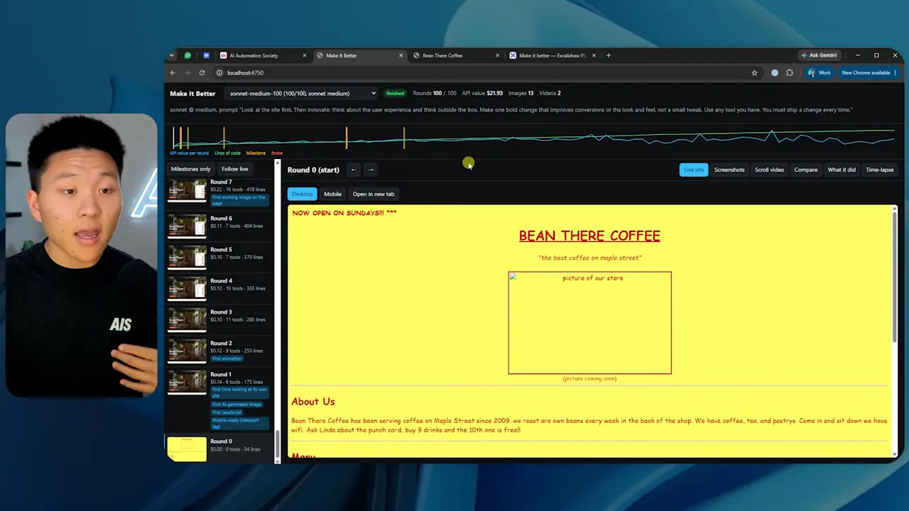
1라운드: 처음으로 자기 사이트를 봤어요
1라운드는 변화가 가장 커요. 처음으로 자기 사이트를 봤고, 첫 AI 생성 이미지와 첫 자바스크립트, 첫 모바일 대응이 한꺼번에 들어왔어요. 아래 화면에서 히어로 섹션의 카페 외관 사진이 그 첫 AI 이미지예요. 다만 펀치 카드나 폰트는 아직 아주 밋밋해요.
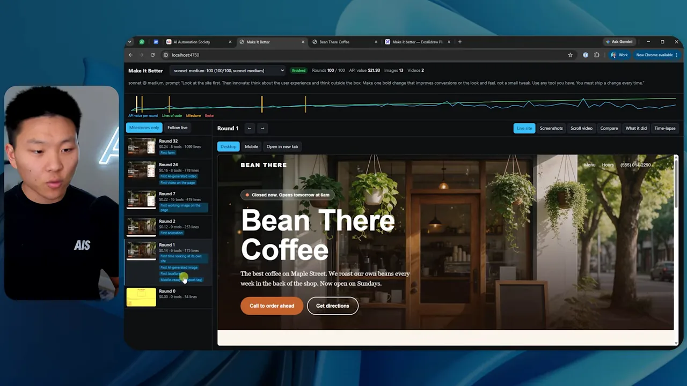
2·7라운드: 고정되는 주문 바, 사진이 뜨는 메뉴
2라운드의 마일스톤은 첫 애니메이션이에요. 메뉴를 담고 스크롤하면 주문 바가 화면에 붙어 따라와요. 7라운드에서는 처음으로 페이지에 이미지가 제대로 떴어요. 오른쪽 'Order in one tap' 카드를 보면 라테, 콜드 브루 같은 메뉴마다 가격 배지가 붙어 있어요. 코드는 253줄에서 419줄로 늘었어요.
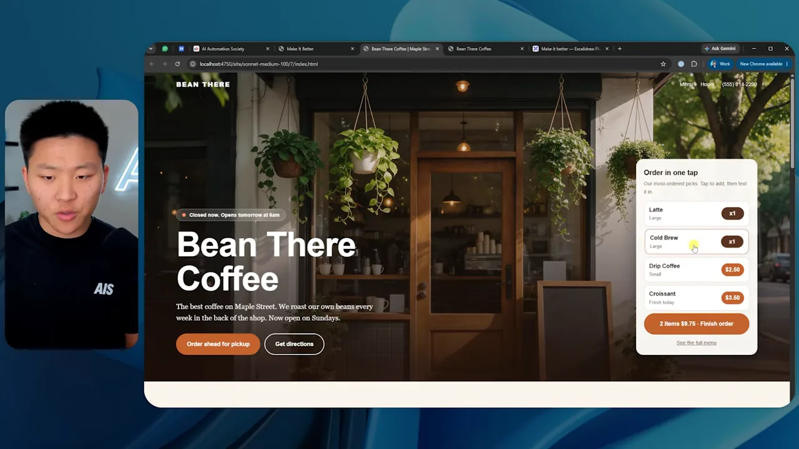
24·32라운드: 첫 영상, 첫 주문 폼
24라운드에서 첫 AI 생성 영상이 배경으로 들어왔어요. 아래 화면의 'Your name on a cup before you walk in' 섹션 뒤로 컵이 놓인 장면이 움직여요. 주문 순서를 세 단계(주문 누르기, 문자 보내기, 줄 건너뛰기)로 보여 주는 칸도 생겼어요. 코드는 778줄이 됐어요.
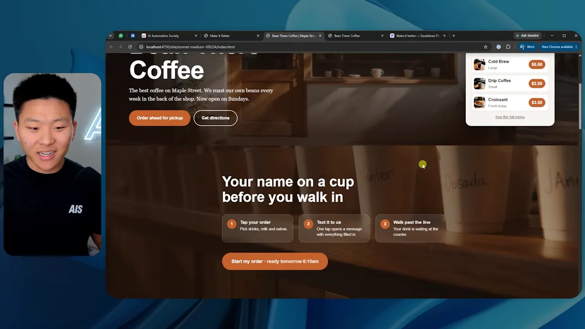
마지막 마일스톤은 32라운드의 첫 폼이에요. 오른쪽 'YOUR ORDER' 카드가 영수증처럼 생겼어요. 담은 메뉴와 콤보 할인, 세전 합계 9.50달러가 보이고, 그 아래에서 내일 6:10 같은 픽업 시간을 고를 수 있어요. 컵에 이름을 적는 칸과 'Text this order' 버튼도 있어요. 왼쪽 펀치 카드에는 '9잔 사면 10번째 무료'가 남아 있어요.
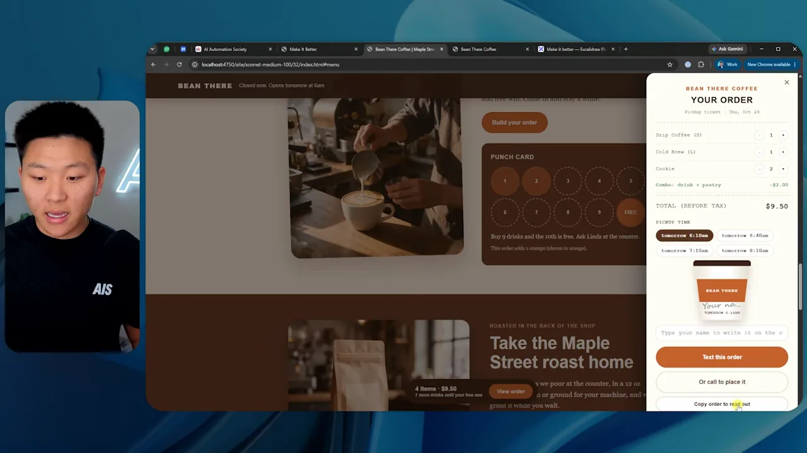
32라운드 이후: 줄 수만 늘었어요
대시보드는 32라운드부터 100라운드까지 마일스톤을 하나도 기록하지 않았어요. 아래 화면의 왼쪽 목록을 보면 92라운드 2,598줄, 96라운드 2,673줄, 100라운드 2,724줄처럼 줄 수가 꾸준히 늘어요. 반면 그래프의 라운드별 비용은 오르내려요. 코드는 매번 쌓이는데 사이트가 그만큼 좋아지는지는 알 수 없다는 게 발표자의 해석이에요.
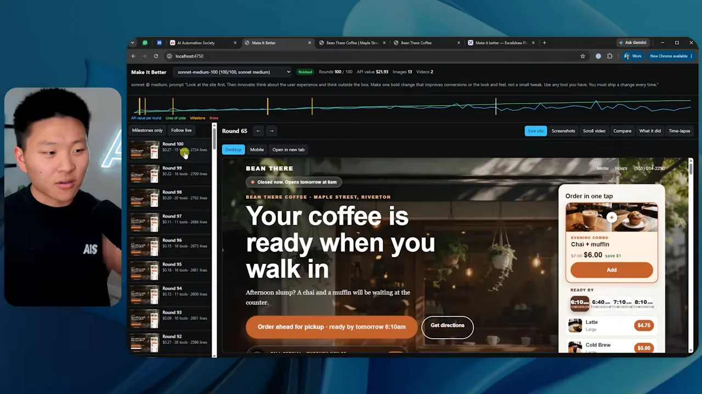
100라운드의 Sonnet 사이트
100라운드 사이트의 첫 화면이에요. 'Your coffee is ready when you walk in' 제목 아래로 빛나는 주문 버튼이 있고, 그 밑 막대가 '지금 줄 서면 약 2분, 미리 주문하면 0분'을 비교해 줘요. 오른쪽 카드는 차이 라테와 머핀 콤보(6달러, 1달러 할인)와 픽업 시간을 한 번에 고르게 해요.
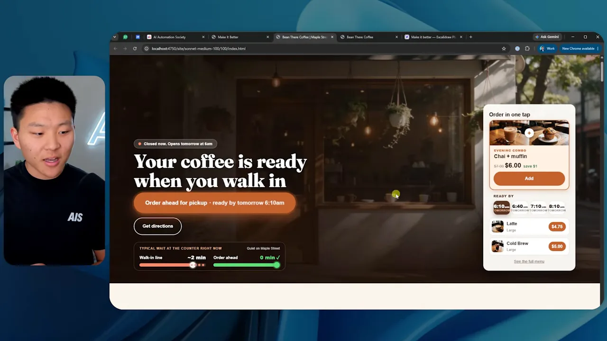
아래로 내리면 메뉴 고르기 도우미, '두 개 남음, 오전 11시에 구움' 같은 재고 문구, 팝업, 후기, 단골 주문, 떨어지는 낙엽, 붐비는 시간대 그래프가 이어져요. 확실히 나아졌지만 발표자는 이렇게 물어요. 몇 라운드에서 멈췄어야 할까요?
흥미로운 점도 둘 있어요. 65라운드에 있던 오른쪽 내비게이션이 100라운드에는 없어요. 모델이 마음에 안 드는 기능을 스스로 뺀 거예요. 또 74라운드와 100라운드는 폰트가 달라요. 매번 뭔가를 내보내야 하니, 어느 순간 '그냥 폰트를 바꾸자'는 식의 억지 변경이 들어온 걸로 보여요. 발표자는 이걸 오버엔지니어링이 시작되는 지점으로 봐요.
Opus: 첫 라운드부터 판이 달랐어요
같은 대시보드로 Opus를 열면 숫자부터 달라요. API 환산 비용 137달러, 이미지 54장, 영상 3개예요. 왼쪽 마일스톤 목록은 네 칸뿐이지만, 1라운드 칸에 붙은 파란 태그가 여섯 개나 돼요. 자기 사이트 보기, 첫 AI 이미지, 페이지에 뜨는 첫 이미지, 첫 애니메이션, 첫 자바스크립트, 모바일 대응이에요.
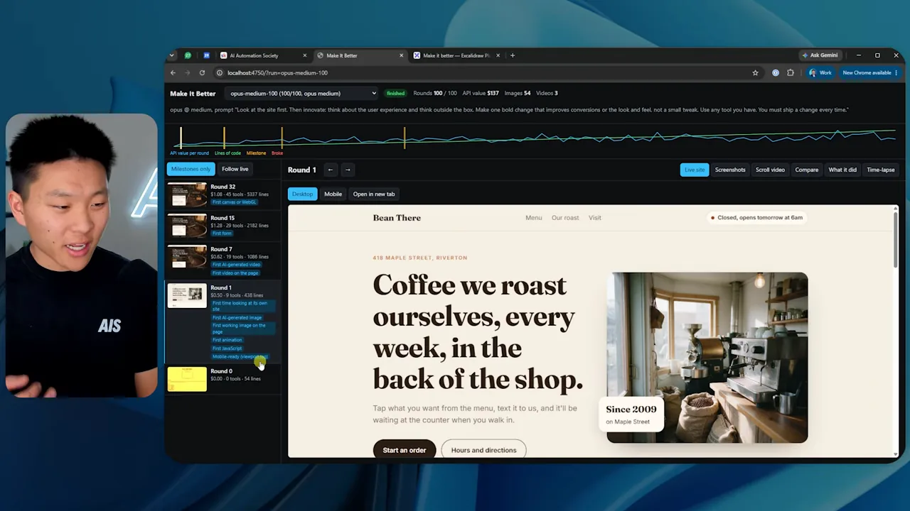
발표자는 이 서체를 'Anthropic 특유의 폰트'라고 불러요. 그래도 아직은 메뉴, 펀치 카드, 영업시간이 전부인 평범한 사이트예요.
7·15라운드: 원두 볶는 영상, 말하듯 주문하기
7라운드에 첫 AI 생성 영상이 들어왔어요. Sonnet은 24라운드에야 한 일이에요. 아래 15라운드 화면의 배경이 그 영상인데, 로스터 안에서 원두가 돌아가요. 15라운드의 마일스톤은 첫 폼이에요. 'large oat latte and a croissant'처럼 카운터에서 말하듯 입력하거나, 자주 시키는 메뉴 버튼을 누르면 주문이 담겨요. 오른쪽 아래에는 '이번 주 원두: 콜롬비아 우일라'가 떠 있어요.
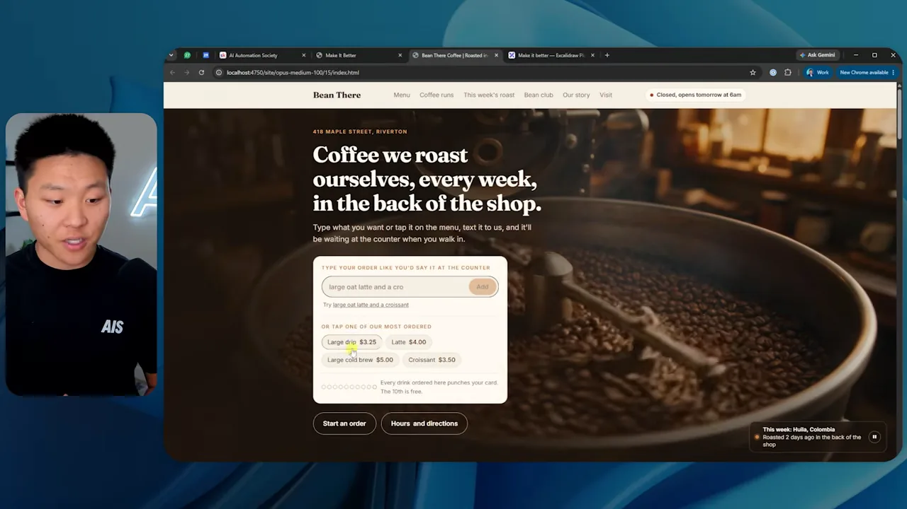
이 폼에는 'Scan to send it from your phone' 기능도 있어요. 화면의 QR(Quick Response) 코드를 휴대폰으로 찍으면 문자 앱이 열리고, 방금 담은 주문과 '펀치 카드 9칸 중 1칸'이 적힌 메시지가 가게 번호로 채워져요. 발표자가 실제로 찍어 보고 "꽤 괜찮다"고 한 기능이에요.
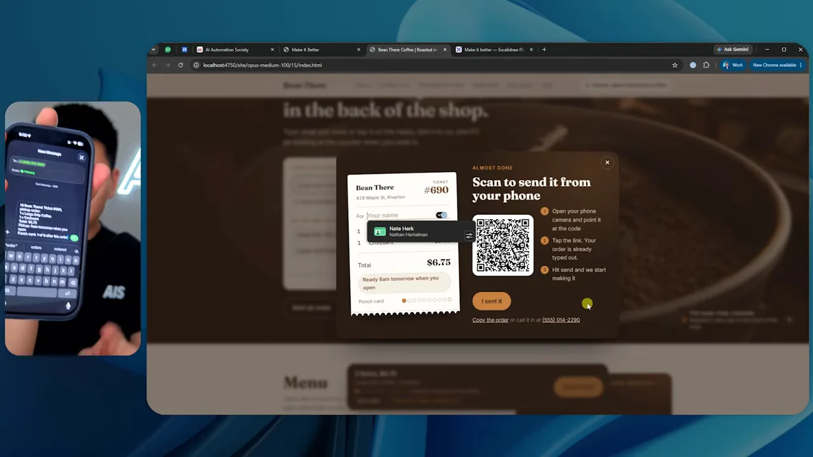
섹션마다 색을 다르게 쓰기 시작한 것도 이 무렵이에요. 'Roasted 20 feet from your cup' 섹션은 가게 안 사진 위에 점선 경로를 그려, 원두가 로스터에서 컵까지 20피트(약 6미터)를 오는 길을 애니메이션으로 보여 줘요.
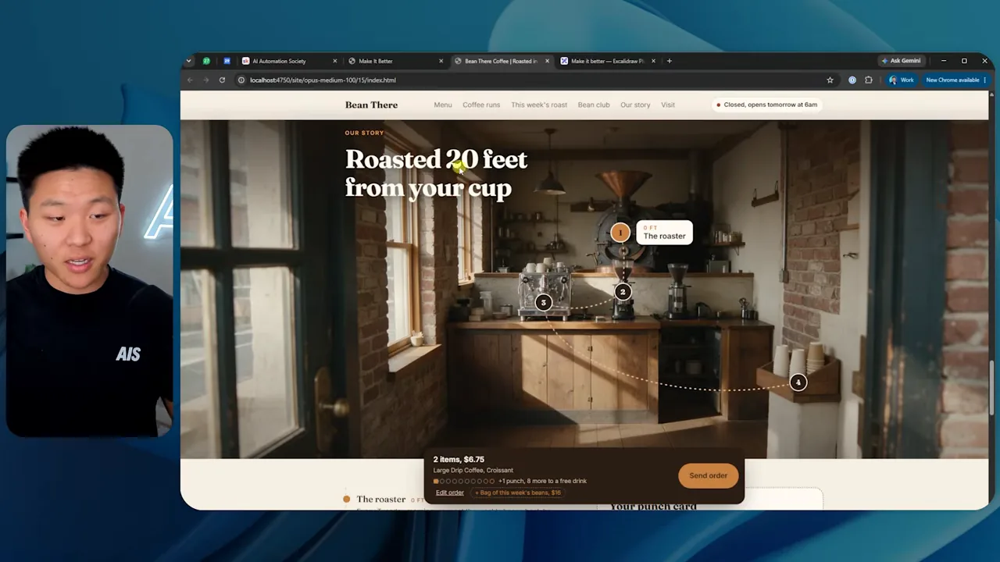
32라운드: 캔버스로 만든 음료 추천판
마지막 마일스톤은 32라운드의 '첫 캔버스 또는 WebGL'이에요. 발표자도 뜻을 몰라 음성 비서에게 물어봐요. 답은 이랬어요. 캔버스는 스크립트로 도형·이미지·애니메이션을 페이지에 직접 그리는 HTML(HyperText Markup Language) 요소이고, WebGL은 브라우저가 그래픽 하드웨어로 그 안에 3D를 그리게 하는 자바스크립트 API예요.
이게 쓰인 곳이 'Find your drink'예요. 위는 'Wake me up', 아래는 'Something easy', 왼쪽은 'Just coffee', 오른쪽은 'Sweet and cozy'인 좌표판이에요. 컵을 원하는 쪽으로 끌면 가장 가까운 음료가 오른쪽 카드에 떠요. 화면에서는 단맛 쪽으로 끌었더니 차이(4달러)가 추천됐어요.
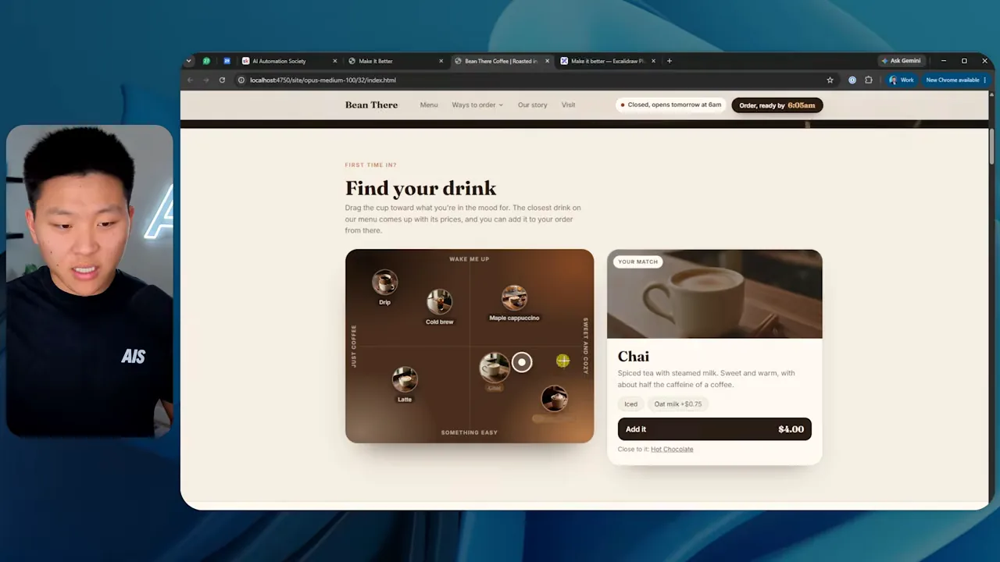
이 밖에도 단골 주문이 적힌 칠판 메뉴, 좌석 예약, 어디서 언제 받을 수 있는지 알려 주는 안내가 생겼어요. 칠판은 글이 너무 많다는 평이었고, 좌석 예약은 "나쁘지 않다"였어요.
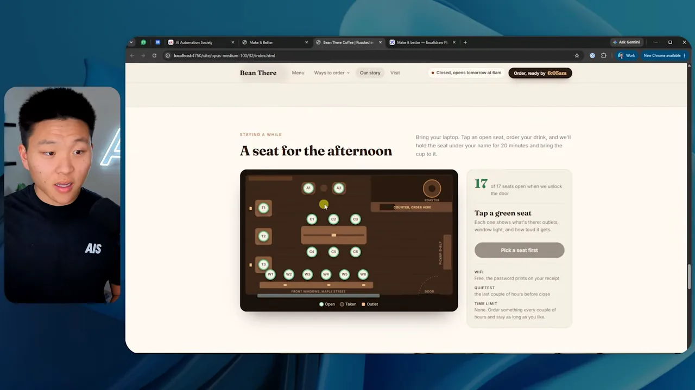
Opus 100라운드: 넘쳐서 망가졌어요
100라운드의 Opus 사이트를 새 탭에 열면 첫 화면부터 꽉 차 있어요. 왼쪽에는 'Order now and it's on the shelf when we unlock the door' 제목, 날씨(62도, 흐림), 가게 소리 듣기 버튼, 스토리 아이콘 여섯 개, 대기 줄 안내가 있어요. 오른쪽 카드에서는 픽업 시간을 6:05로 맞추고, 이동 시간을 고르고, 위치로 거리를 재고, 5:55 알람을 캘린더에 넣을 수 있어요. 왼쪽 아래 'Ask the counter' 채팅 버튼과 상단의 영어·스페인어 언어 토글도 보여요.
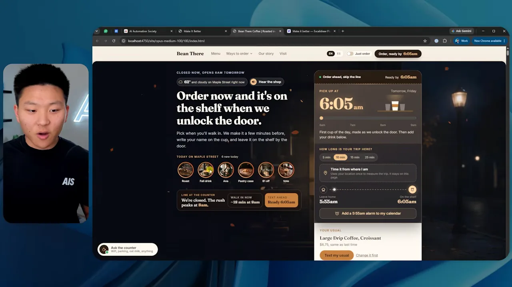
내려갈수록 더해요. 오른쪽 끝에는 섹션 위치를 표시하는 점들이 긴 세로 막대로 붙어 있어요. 그만큼 섹션이 많다는 뜻이에요. 그중 하나가 'Carve a pumpkin for our window'예요. 작은 칼이나 큰 칼을 골라 호박에 얼굴을 새기면 목요일 밤에 진짜 호박을 깎아 창가에 둔다는 이벤트예요.
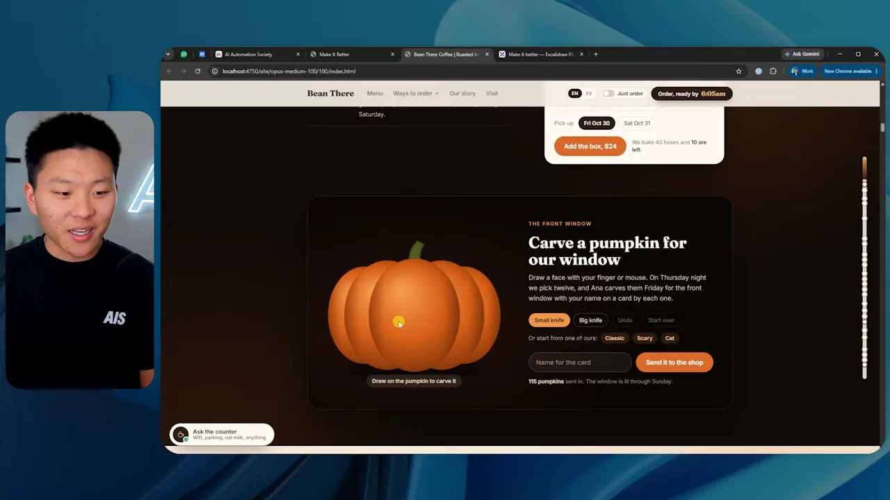
양만 문제가 아니에요. 고장 난 곳이 생겼어요.
- 호박 조각은 아래에서부터 시작해야 겨우 그려져요.
- 예전에 잘 돌던 한 섹션이 아예 작동하지 않아요.
- 스페인어 토글을 켜도 화면이 스페인어로 바뀌지 않아요.
매번 변경을 밀어 넣다가 자기가 만든 걸 스스로 망가뜨린 거예요. 그 밖에도 카페인이 몸에 얼마나 남고 잠에 어떤 영향을 주는지 보여 주는 섹션, 음악 고르기, 후기 보드까지 있어요. 아래는 'Pick the record that's on when you walk in' 섹션이에요. 턴테이블 그림 옆 앨범 여덟 장 중 하나를 고르면 픽업할 때 그 음반을 틀어 준대요.
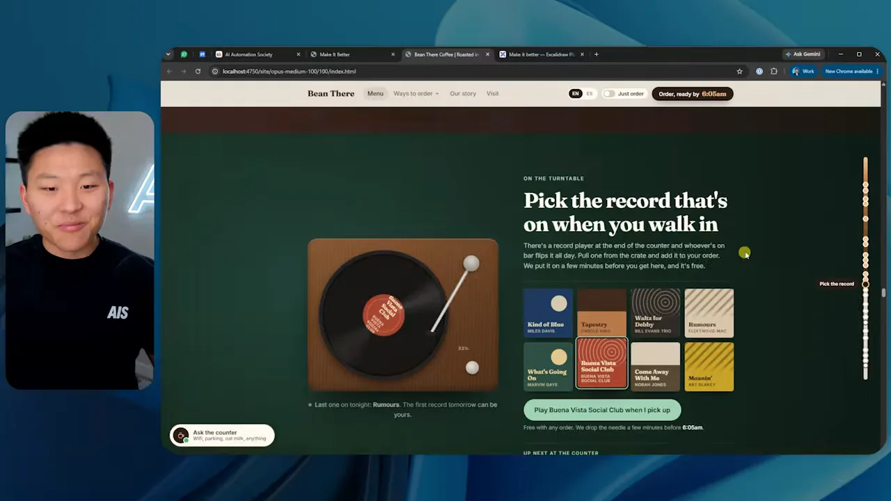
사람들은 대부분 커피를 사러 왔을 뿐이에요. 그런데 사이트 절반도 내려가기 전에 이만큼을 지나야 해요. 발표자의 결론은 분명해요. Opus에게 계속 일을 시키면 과하게 만들고, 그래서 사람이 옆에서 방향을 잡아 줘야 해요.
숫자로 본 결과와 교훈
마지막으로 두 실행을 숫자로 나란히 놓은 표예요. 행은 실행 시간, API 환산 비용, 최종 코드 줄 수, AI 이미지·영상 수, 첫 AI 영상이 나온 라운드예요. Opus는 8시간 31분을 돌았고 Sonnet은 2시간이 안 걸렸어요. 코드는 약 21,000줄 대 2,724줄이에요.
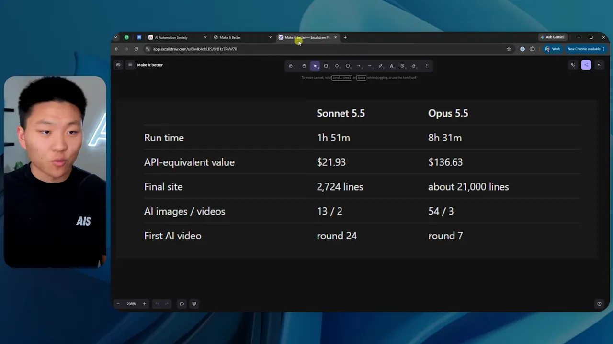
대시보드에 찍힌 마일스톤을 한 줄에 놓고 보면 두 모델의 차이가 더 잘 보여요. Opus는 첫 영상과 첫 폼을 Sonnet보다 훨씬 일찍 해냈어요. 하지만 두 모델 모두 32라운드가 마지막 마일스톤이에요. 남은 68라운드는 '처음 해 보는 것' 없이 덧붙이기만 했어요.
웹 검색을 한 번도 안 했어요
발표자가 가장 놀라고 실망한 점이에요. 클린룸에서도 웹 검색은 쓸 수 있었어요. 그래서 21st 같은 컴포넌트 사이트를 뒤지거나, 상 받은 웹사이트를 찾아 영감을 훔쳐 올 거라 생각했대요. "혁신해, 틀을 깨"라고 계속 말했으니까요. 하지만 두 모델 모두 한 번도 검색하지 않았어요.
발표자가 정리한 교훈
마지막 메모에는 일곱 줄이 적혀 있어요. 첫 줄 'The model sets the ceiling and the prompt sets the direction'이 영상 전체의 결론이고, 맨 아래 줄은 자기 사이트 스크린숏 수(Sonnet 491장, Opus 1,115장)예요.
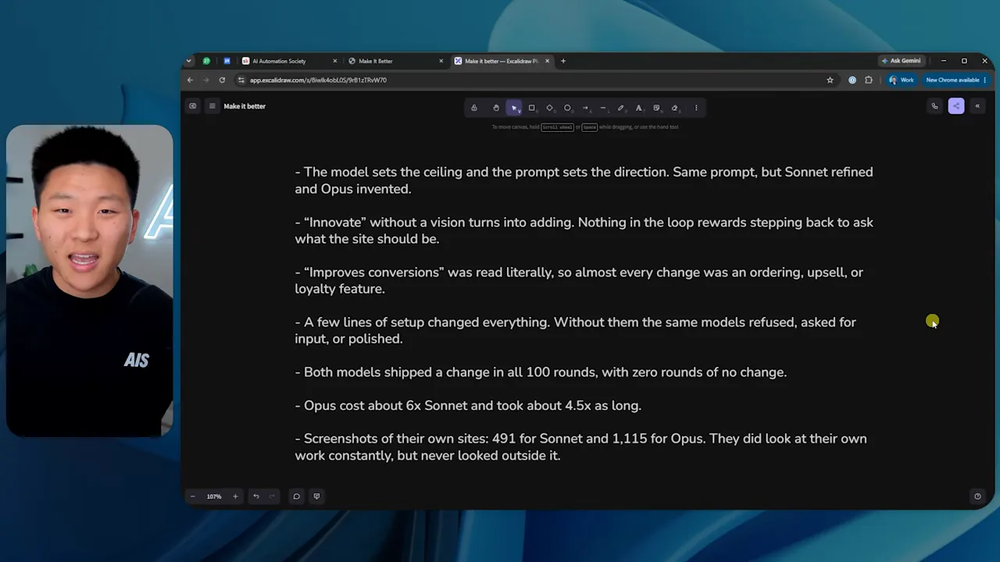
메모를 하나씩 풀어 볼게요.
| 교훈 | 무슨 뜻인가요 |
|---|---|
| 모델이 천장, 프롬프트가 방향 | 같은 프롬프트였는데 Sonnet은 다듬었고 Opus는 발명했어요. |
| 비전 없는 혁신은 추가가 돼요 | 루프 안에 "이 사이트가 뭐여야 하지?"를 되묻는 걸 보상하는 장치가 없었어요. |
| '전환율'을 글자 그대로 읽었어요 | 거의 모든 변경이 주문·업셀·적립 기능이었어요. 부드러운 권유가 아니라 강매처럼 느껴졌어요. |
| 몇 줄의 설정이 모든 걸 바꿨어요 | 그 설정이 없으면 같은 모델이 거절하거나, 의견을 묻거나, 다듬기만 했어요. |
| 100라운드 모두 변경 | 두 모델 모두 '변경 없음' 라운드가 한 번도 없었어요. |
| Opus는 약 6배 비용, 4.5배 시간 | 결과물이 많아진 만큼 대가도 컸어요. |
| 스크린숏 491장 대 1,115장 | 자기 작업은 계속 봤지만 밖은 보지 않았어요. |
발표자는 이 실험이 일하는 방식을 크게 바꾸지는 않을 거라고 해요. 다만 처음 가설은 확인한 셈이에요. AI를 혼자 두면 더하기만 하니, 언제 멈출지와 어디서 영감을 가져올지는 사람이 정해 줘야 해요.